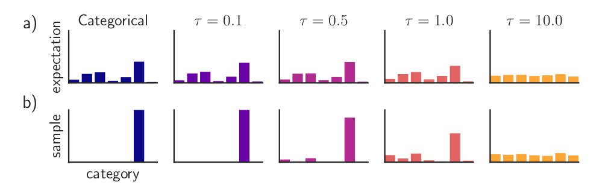
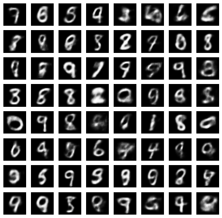

import numpy as np
import torch
import torch.nn.functional as F
from torch import nn, optim
from torch.nn import functional as F
from torchvision import datasets, transforms
from torchvision.utils import save_image
from torch.distributions.one_hot_categorical import OneHotCategorical
import matplotlib
import matplotlib.pyplot as plt
%matplotlib inline
cuda=TrueSGA - Sampling Discrete Structures
Notebook: 

Author: Adeel Pervez
In these tutorials we discuss methods for sampling discrete variables from unstructured vectors to more structured objects such as subsets, permutations and graphs which can be incorporated in differentiable models.
At the foundation of these methods are continuous relaxations for discrete (binary or categorical) random variables. So the first part of the tutorial gives an introduction to sampling form discrete distributions with the Gumbel-Softmax trick. We use the method to train a variational autoencoder with categorical latent variables.
Categorical Sampling with Gumbel-Argmax
Suppose we are given a categorical distribution with \(C\) values as weights \(w_i \in (0,\infty)\). We would like to obtain a sample from this distribution. The probability of each category \(c_i\) is given by the following softmax distribution
\[p_i = \frac{\exp(\log(w_i))}{\sum_j \exp(\log(w_j))}\]
The Gumbel-Argmax method for sampling this distribution is the following: Sample \(U_k \sim Uniform(0,1)\) iid and compute \(r_k = \log\alpha_k -log(-\log U_k)\). Then choose the index \(i\) of the maximum \(r_k\) (ie take the argmax) and return the 1-hot vector with the \(i\)th index set to 1 and the rest to 0. The form of noise \(-log(-\log U_k)\) added to form \(r_k\) has a Gumbel distribution whence the method gets its name. The cumulative distribution function of the Gumbel distribution (with location 0 and scale 1) is given as
\[F(z) = \exp(-\exp(-z))\]
You can take a look at a proof that this indeed samples from the softmax distribution here.
In short sampling a categorical variable with the Gumbel reparameterization proceeds as follows.
- Given weights \(w_i\) compute \(r_i = w_i+g_i\) where \(g_i\) are iid Gumbel samples
- Argmax: Return index of largest \(r_i\) as a 1-hot vector
Softmax Relaxation
The above procedure still cannot be used in a differentiable model since the argmax operation has zero gradient except at points of discontinuity. So instead we use the softmax as a differentiable approximation to the argmax. In order to control the approximation we introduce a tunable temperature hyperparameter \(\tau\) which controls how far the softmax outputs are from being 1-hot.
\[p_i = \frac{\exp(r_i/\tau)}{\sum_j \exp(r_j/\tau)}\]
The following figure (Paper Link) shows the effect of temperature on the distribution and samples.

A smaller temperature indicates a tighter approximation and the larger the temperature the looser the approximation. Of course, if the temperature is too small we wouldn’t be able to train the model since the gradients would be very small. On the other hand, a large temperature would make the categorical outputs very far from being discrete, so it is important to choose an appropriate temperature for the problem at hand. One possibility is to slowly anneal the temperature from large to small so that close to the end of training the relaxed categorical outputs are closed to discrete. In practice, however, the temperature is often kept fixed during each training trial and tuned with cross-validation.
With the softmax relaxation the sampling then proceeds as follows
- Given weights \(w_i\) compute \(r_i = w_i+g_i\) where \(g_i\) are iid Gumbel samples
- Apply softmax with temperature to obtain a relaxed categorical sample
Categorical VAE
As an example of the Gumbel Softmax relaxation we show a VAE with a categorical variable latent space for MNIST. The latent space has the structure of a vector of categorical variables each with the same fixed number of categories. In the following example the latent space has 30 categorical variables each of dimension 10. Since this is a VAE we also need to define a prior on the latent space which we define to be the uniform categorical distribution.
The following implementation uses code from here with minor modification.
We being with the required imports and hyperparameter definitions.
batch_size = 100
epochs = 10
latent_dim = 30
categorical_dim = 10
temp = 1.0Gumbel Sampling
We now define the Gumbel-Softmax sampling routines. The sample_gumbel function samples scale 0 location 1 Gumbel variables by sampling uniform random variables in \(U(0,1)\) and computing \(-\log(-\log(U(0,1))\). The categorical parameters are input as unnormalized log probabilities. The gumbel_softmax_sample function adds the Gumbel noise to the logits, applies the temperature and the softmax function. In the gumbel_softmax function we also add evaluation code which simply returns a sample (unrelaxed) from the categorical distribution parameterized by logits.
def sample_gumbel(shape, eps=1e-20):
U = torch.rand(shape)
if cuda:
U = U.cuda()
return -torch.log(-torch.log(U + eps) + eps)
def gumbel_softmax_sample(logits, temperature):
y = logits + sample_gumbel(logits.size())
return F.softmax(y / temperature, dim=-1)
def gumbel_softmax(logits, temperature, evaluate=False):
if evaluate:
d = OneHotCategorical(logits=logits.view(-1, latent_dim, categorical_dim))
return d.sample().view(-1, latent_dim * categorical_dim)
y = gumbel_softmax_sample(logits, temperature)
return y.view(-1, latent_dim * categorical_dim)VAE model
Now we define the VAE model. The encoder computes the categorical probability parameters from which relaxed categorical variables can be sampled and passed into the decoder.
class VAE_gumbel(nn.Module):
def __init__(self, temp):
super(VAE_gumbel, self).__init__()
self.fc1 = nn.Linear(784, 512)
self.fc2 = nn.Linear(512, 256)
self.fc3 = nn.Linear(256, latent_dim * categorical_dim)
self.fc4 = nn.Linear(latent_dim * categorical_dim, 256)
self.fc5 = nn.Linear(256, 512)
self.fc6 = nn.Linear(512, 784)
self.relu = nn.ReLU()
self.sigmoid = nn.Sigmoid()
def encode(self, x):
h1 = self.relu(self.fc1(x))
h2 = self.relu(self.fc2(h1))
return self.relu(self.fc3(h2))
def decode(self, z):
h4 = self.relu(self.fc4(z))
h5 = self.relu(self.fc5(h4))
return self.sigmoid(self.fc6(h5))
def forward(self, x, temp, evaluate=False):
q = self.encode(x.view(-1, 784))
q_y = q.view(q.size(0), latent_dim, categorical_dim)
z = gumbel_softmax(q_y, temp, evaluate)
return self.decode(z), F.softmax(q_y, dim=-1).reshape(*q.size())KL Divergence
Since this is a VAE we also need to compute a KL divergence of the latent probability distribution with the uniform prior \(p(x) = 1/C\) for all \(x\) where \(C\) is the total number of categories.
\[\begin{align} KLD(q||p) &= E_q\left[\log\frac{q(x)}{p(x)}\right]\\ &= \sum_{i=1}^{C} q(x_i) \log (C \cdot q(x_i)) \end{align}\]
Here \(q(x)\) is the latent probability distribution
Finally we compute the reconstruction loss of the input as the binary cross entropy between the reconstruction parameters and the input image and add that to the KL divergence to get the VAE loss.
def loss_function(recon_x, x, qy):
BCE = F.binary_cross_entropy(recon_x, x.view(-1, 784), size_average=False) / x.shape[0]
log_ratio = torch.log(qy * categorical_dim + 1e-20)
KLD = torch.sum(qy * log_ratio, dim=-1).mean()
return BCE + KLDNext we build the model and train
model = VAE_gumbel(temp)
if cuda:
model.cuda()
optimizer = optim.Adam(model.parameters(), lr=1e-3)kwargs = {'num_workers': 1, 'pin_memory': True} if cuda else {}
train_loader = torch.utils.data.DataLoader(
datasets.MNIST('./data/MNIST', train=True, download=True,
transform=transforms.ToTensor()),
batch_size=batch_size, shuffle=True, **kwargs)
test_loader = torch.utils.data.DataLoader(
datasets.MNIST('./data/MNIST', train=False, transform=transforms.ToTensor()),
batch_size=batch_size, shuffle=True, **kwargs)/home/apervez/anaconda3/envs/pytorch1.9_2/lib/python3.7/site-packages/torchvision/datasets/mnist.py:498: UserWarning: The given NumPy array is not writeable, and PyTorch does not support non-writeable tensors. This means you can write to the underlying (supposedly non-writeable) NumPy array using the tensor. You may want to copy the array to protect its data or make it writeable before converting it to a tensor. This type of warning will be suppressed for the rest of this program. (Triggered internally at /opt/conda/conda-bld/pytorch_1623448224956/work/torch/csrc/utils/tensor_numpy.cpp:180.)
return torch.from_numpy(parsed.astype(m[2], copy=False)).view(*s)For training we compute both the relaxed and the unrelaxed objective. The unrelaxed objective is not itself used for training. However, since that’s the objective we want to improve, it’s a good idea to also evaluate it so that we can observe how far the relaxed objective is from the actual objective. This also allows us to get an idea of how low or high to set the temperature so that the relaxed objective is not too far from the true objective while achieving reasonable training performance.
def train(epoch):
model.train()
train_loss = 0
train_loss_unrelaxed = 0
#temp = args.temp
for batch_idx, (data, _) in enumerate(train_loader):
if cuda:
data = data.cuda()
optimizer.zero_grad()
recon_batch, qy = model(data, temp)
loss = loss_function(recon_batch, data, qy)
loss.backward()
train_loss += loss.item() * len(data)
optimizer.step()
#Unrelaxed training objective for comparison
recon_batch_eval, qy_eval = model(data, temp, evaluate=True)
loss_eval = loss_function(recon_batch_eval, data, qy_eval)
train_loss_unrelaxed += loss_eval.item() * len(data)
print('Epoch: {} Average loss relaxed: {:.4f} Unrelaxed: {:.4f}'.format(
epoch, train_loss / len(train_loader.dataset) , train_loss_unrelaxed / len(train_loader.dataset)))def test(epoch):
model.eval()
test_loss = 0
for i, (data, _) in enumerate(test_loader):
if cuda:
data = data.cuda()
recon_batch, qy = model(data, temp, evaluate=True)
test_loss += loss_function(recon_batch, data, qy).item() * len(data)
test_loss /= len(test_loader.dataset)
print('Eval loss: {:.4f}'.format(test_loss))Finally we can run the training. You can try training with different values of the temperature to see how that affects the relaxed objective relative to the true one.
def run():
for epoch in range(1, epochs + 1):
train(epoch)
test(epoch)
run()/home/apervez/anaconda3/envs/pytorch1.9_2/lib/python3.7/site-packages/torch/nn/_reduction.py:42: UserWarning: size_average and reduce args will be deprecated, please use reduction='sum' instead.
warnings.warn(warning.format(ret))Epoch: 1 Average loss relaxed: 197.1857 Unrelaxed: 199.8391
Eval loss: 178.9625
Epoch: 2 Average loss relaxed: 154.2037 Unrelaxed: 163.6063
Eval loss: 152.1406
Epoch: 3 Average loss relaxed: 136.7130 Unrelaxed: 148.5179
Eval loss: 144.5594
Epoch: 4 Average loss relaxed: 129.4279 Unrelaxed: 141.8772
Eval loss: 138.8380
Epoch: 5 Average loss relaxed: 124.0670 Unrelaxed: 137.2079
Eval loss: 135.5893
Epoch: 6 Average loss relaxed: 120.2097 Unrelaxed: 133.9328
Eval loss: 131.6892
Epoch: 7 Average loss relaxed: 117.3797 Unrelaxed: 131.4627
Eval loss: 130.6390
Epoch: 8 Average loss relaxed: 115.1937 Unrelaxed: 129.7081
Eval loss: 128.6939
Epoch: 9 Average loss relaxed: 113.3871 Unrelaxed: 128.1377
Eval loss: 128.0002
Epoch: 10 Average loss relaxed: 111.9536 Unrelaxed: 127.0920
Eval loss: 126.7100Generating Samples
We can now generate some samples from the trained decoder. For this we sample some uniform categorical variables from the prior and pass them into the decoder.
def generate_samples():
#generate uniform probability vector
model.eval()
probs = torch.ones([64, latent_dim, categorical_dim])*(1/categorical_dim)
cat_samples = OneHotCategorical(probs=probs.cuda()).sample().view(-1, latent_dim*categorical_dim)
output = model.decode(cat_samples)
return output.view(-1,28,28).detach().cpu().numpy()samples = generate_samples()def show_gray_image_grid(imgs, x=2, y=5, size=(8,8), path=None, save=False):
fig, axs = plt.subplots(x, y, figsize=size)
axs = axs.flatten()
for img, ax in zip(imgs, axs):
ax.imshow(np.squeeze(img), cmap='gray')
#ax.imshow(img, cmap='gray')
ax.set_axis_off()
if save:
plt.savefig(path)
else:
plt.show()
show_gray_image_grid(samples, 8,8)
Gumbel Straight-Through
In some instances we want to train models with discrete variables but do not want to pass relaxed values as inputs. This might be the case where we want to optimize a function that cannot be defined for relaxed inputs and must use categorical/discrete inputs. One heuristic for such cases is the Straight-Through estimator. Here given some pre-activation \(y\) for which we want the gradient we compute the sample \(z\) using the non-differentiable sampling operations such as with categorical or Bernoulli sampling. Then we compute the downstream function \(f\) on the hard sample. Then in the backward pass we ignore the non-differentiable operation and pass the gradient relative to \(z\) back as the gradient relative to \(y\). That is we set.
\[\partial_y f := \partial_z f.\]
This is the straight-through gradient and gives a biased estimate of the gradient, but in many cases this can often allow us to train models with discrete variables.
Here we use the straight-through gradient with Gumbel-Softmax relaxation. In this case we compute the Gumbel-Softmax relaxation as before. From the relaxation we compute a 1-hot vector where the index with the largest value is set to 1 and all others are set to 0. This is used as the discrete value in the downstream network and we use the straight-through gradient in the backward pass.
Given a hard vector y_hard and a soft vector y there is a well-known trick that can be used to incorporate straight-through gradients. We compute
y = (y_hard - y).detach() + ywhich simply uses the y_hard in the forward pass but the gradient relative to y in the backward pass.
def gumbel_softmax(logits, temperature, evaluate=False, hard=False):
if evaluate:
d = OneHotCategorical(logits=logits.view(-1, latent_dim, categorical_dim))
return d.sample().view(-1, latent_dim * categorical_dim)
y = gumbel_softmax_sample(logits, temperature)
if hard:
#Straight-through gradient
#takes the index of the largest and insert a 1.
#all others are set to 0 obtaining a 1-hot vector.
shape = logits.size()
_, k = y.max(-1)
y_hard = torch.zeros_like(logits)
y_hard = y_hard.zero_().scatter_(-1, k.view(shape[:-1] + (1,)), 1.0)
#This a trick to use the 1-hot value in the forward pass and the
#relaxed gradient in the backward pass
y = (y_hard - y).detach() + y
return y.view(-1, latent_dim * categorical_dim)As an exercise you can train the VAE model given above using Gumbel-Straight-Through by using the above function in the model definition and setting hard=True.
In the next tutorials we will see how the basic Gumbel relaxation method can be used to differentiably sample other discrete structures such as subsets, permutations and graphs.
References
Categorical Reparameterization with Gumbel-Softmax
The Concrete Distribution: A Continuous Relaxation of Discrete Random Variables